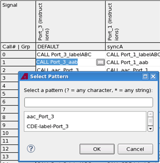

Editing a multiport burst setup
Editing a multiport burst setup means, for example, inserting CALL and NOP instructions or changing the sync group.
You can edit a multiport burst setup both in a multiport burst editor and in the Pattern Explorer. The editing options vary.
Most tasks like Open, Cut, Copy and Paste, Insert, Delete, Up and Down, etc. are identical to Pattern Editor tasks and Pattern Explorer tasks. These are not described here. This topic covers only the multiport burst specific editing tasks.
To edit a multiport burst you must have created a multiport burst, see Creating a multiport burst. For adding port bursts see Creating and assigning a port burst.
New Port Burst |
For how to add a new port burst, see Creating and assigning a port burst. |
General tasks |
Tasks like Open, Cut, Copy, Paste, Insert, Delete, Up and Down, etc. are identical to Pattern Editor tasks |
Goto |
To open the "Go To" dialog, double-click the location field in the status line. For a multiport burst overview page and for a collapsed sync group page, the "Go to" dialog allows to jump to the Instructions column and or the Index/Call Number. |
Instruction Cell editing |
To insert a Call instruction in a cell use content assist (Ctrl + space). To select the pattern for a CALL instruction click the button. In the Select Pattern dialog select the pattern to be called.  |
Common edit
|
You can commonly edit multiple cells in a row:
The following rules apply:
|
Sync Group |
To change the Sync Group of a port burst, you edit the table cell in the Sync Group column of the Pattern Explorer. You may use Content Assist (Ctrl + spacebar) to list the valid options. |
General tasks |
You can use the Cut, Copy, Paste, Insert, Delete, Up and Down functions to edit calls in port bursts just like editing normal bursts in the Pattern Explorer. |
Functional changes
- Introduced in SmarTest 7.1.3